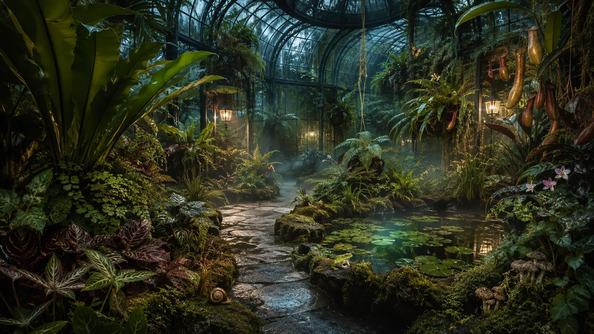
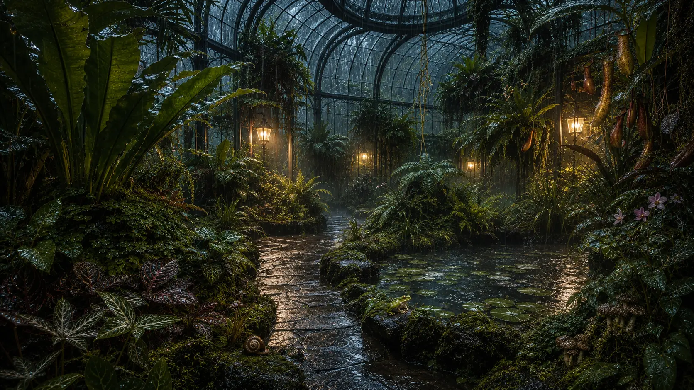
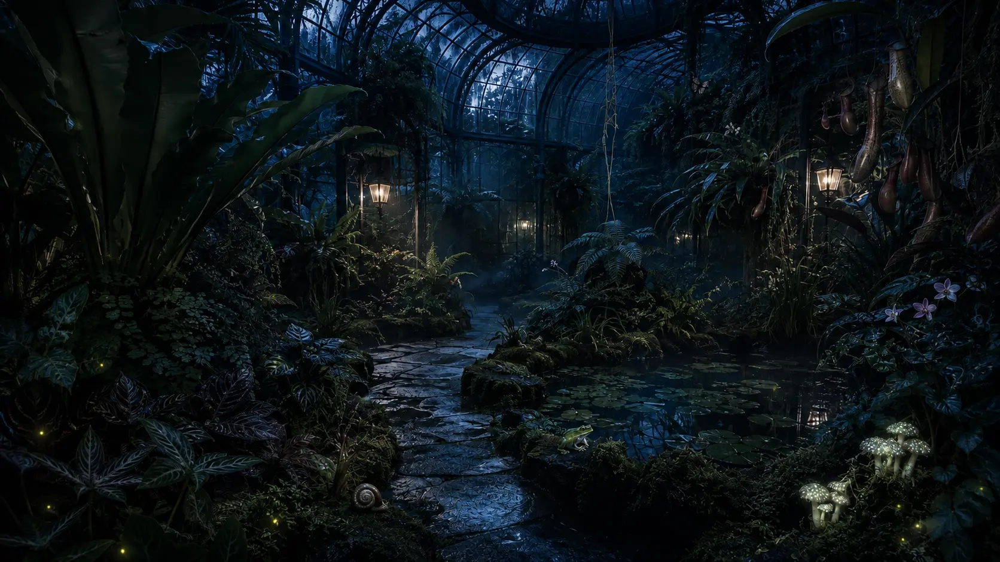
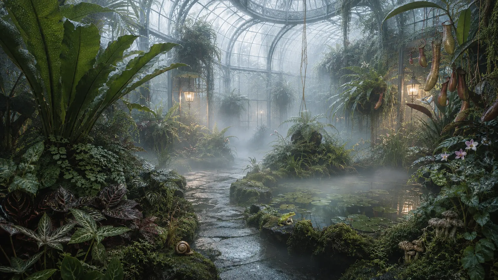

The Verdant AfterhoursDIGITAL TERRARIUM / JEAN 06
CONSERVATORY BREATHING
THE HOUSE WAKES AFTER DARK
Step into
something living.
A small climate with a long memory. Follow the path, change the hour, and learn which residents reveal themselves only when the glasshouse feels understood.


FIELD NOTES
0 / 4